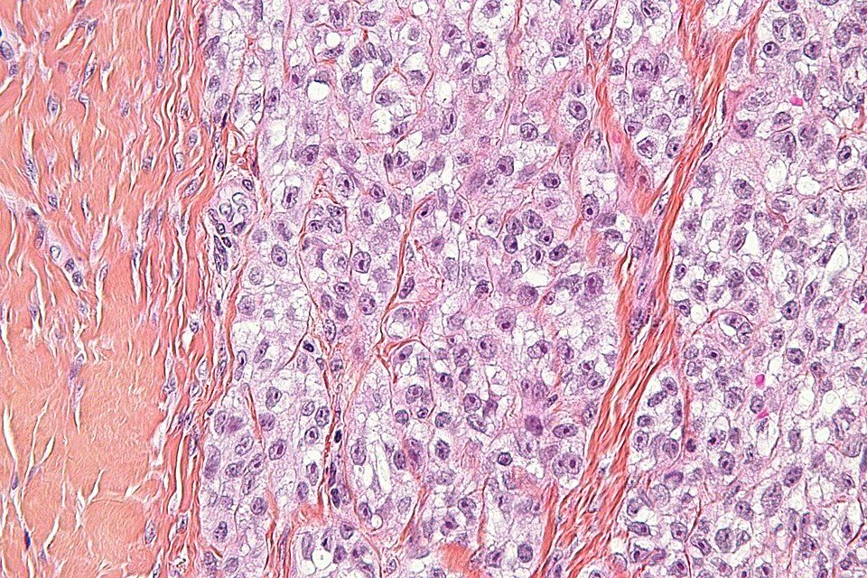

Información divulgativa. No sustituye la valoración de tu equipo médico ni sirve para decidir un tratamiento.


En resumen
| Frecuencia | Alrededor del 1 % de los cánceres de adultos y el 10-15 % de los infantiles; unos 1.800 casos al año en España |
| Tipos | Partes blandas (80 %) y hueso (20 %); más de 70 subtipos |
| Señal | Bulto profundo, de más de 5 cm o que crece, aunque no duela |
| Regla de oro | Biopsia y tratamiento en un centro de referencia antes de operar |
| Tratamiento | Cirugía con márgenes amplios, radioterapia, quimioterapia según el tipo |
| Supervivencia | En torno al 60-65 % a cinco años en partes blandas |
Qué son
Los sarcomas nacen de las células del mesénquima, el tejido embrionario que forma músculo, grasa, hueso, cartílago, vasos y tejido fibroso. Pueden aparecer en cualquier parte del cuerpo, sobre todo en extremidades (muslo), retroperitoneo, tronco y cabeza y cuello.
Principales tipos
| Grupo | Tipos | Ficha |
|---|---|---|
| Partes blandas | Liposarcoma | Liposarcoma |
| Leiomiosarcoma | Leiomiosarcoma | |
| Sarcoma pleomórfico indiferenciado, sarcoma sinovial, mixofibrosarcoma, tumor maligno de vaina nerviosa | — | |
| Angiosarcoma | Angiosarcoma | |
| Rabdomiosarcoma (niños) | Rabdomiosarcoma | |
| GIST (digestivo) | GIST | |
| Sarcoma de Kaposi | Sarcoma de Kaposi | |
| Hueso | Osteosarcoma | Osteosarcoma |
| Sarcoma de Ewing | Sarcoma de Ewing | |
| Condrosarcoma | Condrosarcoma | |
| Útero | Leiomiosarcoma uterino y otros | Sarcoma uterino |
Los tumores desmoides (fibromatosis agresiva) no dan metástasis, pero son localmente agresivos; hoy se vigilan o se tratan con nirogacestat.
Factores de riesgo
La mayoría no tienen causa conocida. Factores: radioterapia previa (sarcomas inducidos años después), síndromes hereditarios (Li-Fraumeni, neurofibromatosis tipo 1, retinoblastoma hereditario), linfedema crónico (angiosarcoma), cloruro de vinilo.
Síntomas
- Bulto que crece, a menudo sin dolor, que se confunde con un hematoma o un lipoma.
- Dolor óseo persistente, sobre todo nocturno, o fractura (sarcomas óseos).
- Síntomas abdominales vagos en los retroperitoneales, que pueden alcanzar gran tamaño.
Criterios de derivación: todo bulto de partes blandas de más de 5 cm, profundo respecto a la fascia, que crece o que reaparece tras quitarlo, debe estudiarse con resonancia y biopsia en un centro especializado.
Diagnóstico
- Resonancia magnética (o TC en abdomen).
- Biopsia con aguja gruesa planificada por el equipo que va a operar (una biopsia mal hecha puede comprometer la cirugía).
- Revisión por un patólogo experto en sarcomas con estudios moleculares: hasta un 25 % de diagnósticos cambian.
- TC de tórax (los sarcomas dan metástasis sobre todo en el pulmón).
Tratamiento
- Cirugía con márgenes amplios, conservando la extremidad en más del 90 % de los casos.
- Radioterapia, preferiblemente antes de la cirugía en sarcomas de extremidades.
- Quimioterapia según el tipo: imprescindible en Ewing, osteosarcoma y rabdomiosarcoma; en adultos con sarcoma de partes blandas de alto riesgo se valora caso a caso (doxorrubicina e ifosfamida).
- Enfermedad avanzada: doxorrubicina, trabectedina, eribulina (liposarcoma), pazopanib, gemcitabina con docetaxel; terapias dirigidas en subtipos concretos (larotrectinib en fusiones NTRK, afami-cel, una terapia celular T, en sarcoma sinovial).
- Cirugía de metástasis pulmonares en pacientes seleccionados.
Por qué un centro de referencia
Los estudios muestran que los pacientes tratados en centros con muchos casos y comités multidisciplinares tienen menos recaídas y mejor supervivencia. En España hay unidades de referencia (CSUR) y la red europea EURACAN.
Preguntas para tu equipo
- ¿Qué subtipo exacto de sarcoma tengo? ¿Lo ha revisado un patólogo experto?
- ¿Se hará radioterapia antes o después de la cirugía?
- ¿Necesito quimioterapia?
- ¿Cómo será la rehabilitación?
Ver también: Osteosarcoma, Sarcoma de Ewing, Tumor del estroma gastrointestinal (GIST), Cáncer infantil.
Historia · Medicapedia
Sarcomas en la historia de la medicina
Cómo se descubrió, quién lo investigó y cómo cambió su tratamiento a lo largo de los siglos, contado en Medicapedia, nuestra web hermana de historia de la medicina.
Leer la historia en Medicapedia ↗Fuentes
- Gronchi A, et al. Soft tissue and visceral sarcomas: ESMO-EURACAN-GENTURIS Clinical Practice Guidelines. Ann Oncol. 2021;32:1348-1365. doi:10.1016/j.annonc.2021.07.006
- Strauss SJ, et al. Bone sarcomas: ESMO-EURACAN-GENTURIS-ERN PaedCan Clinical Practice Guideline. Ann Oncol. 2021;32:1520-1536.
- WHO Classification of Tumours Editorial Board. Soft Tissue and Bone Tumours. 5.ª ed. Lyon: IARC; 2020.
- Grupo Español de Investigación en Sarcomas (GEIS). grupogeis.org
Guías y documentos recientes (2024-2026)
- SEOM y REDECAN. Las cifras del cáncer en España 2026. Madrid: SEOM; 2026. seom.org
- Vaz-Salgado MA, et al. Diagnosis and therapy of soft tissue sarcomas: Spanish Group for Research in Sarcomas (GEIS) guidelines. Cancers. 2025;17:3158. mdpi.com
- SEOM-GEIS Spanish clinical guidelines for the management of soft-tissue sarcomas (2024). Clin Transl Oncol. 2025;27:1460-1471. PubMed
Fuentes revisadas y actualizadas en noviembre de 2026.